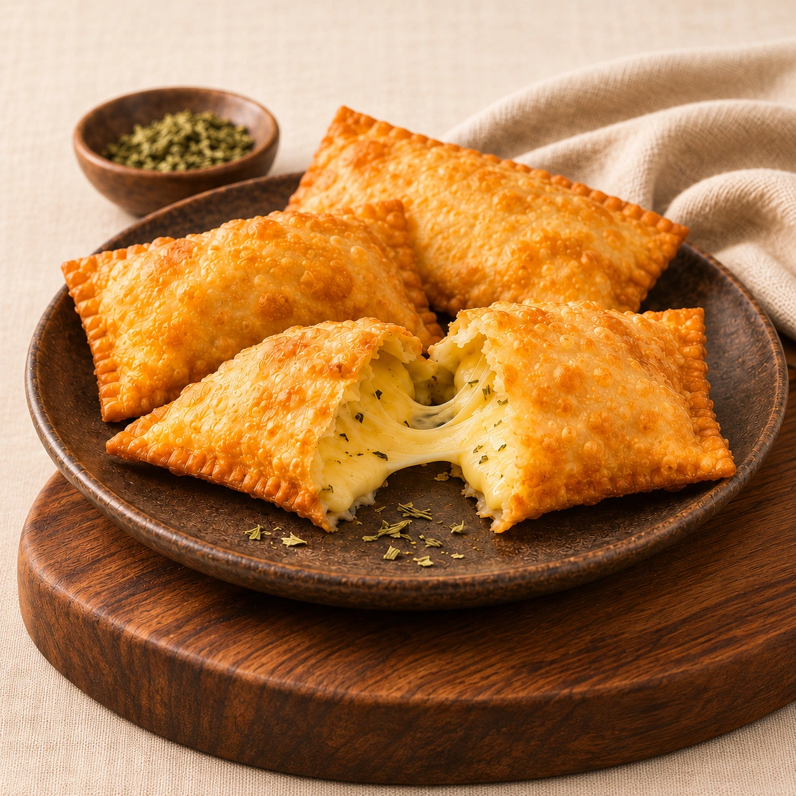

Massa DouradaLOJA DEMONSTRATIVA
A delicadeza de
uma boa massa.
Pastéis artesanais para saborear com calma.

Avaliação de exemploBairro de exemploHorário de exemplo
Modelo demonstrativo • Imagem ilustrativa
Pastéis artesanais para saborear com calma.
